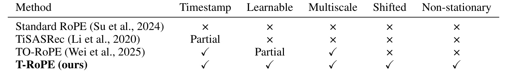
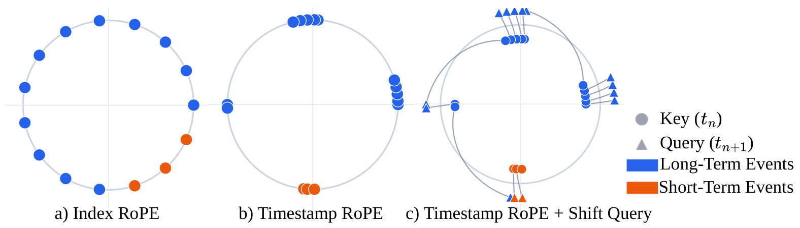
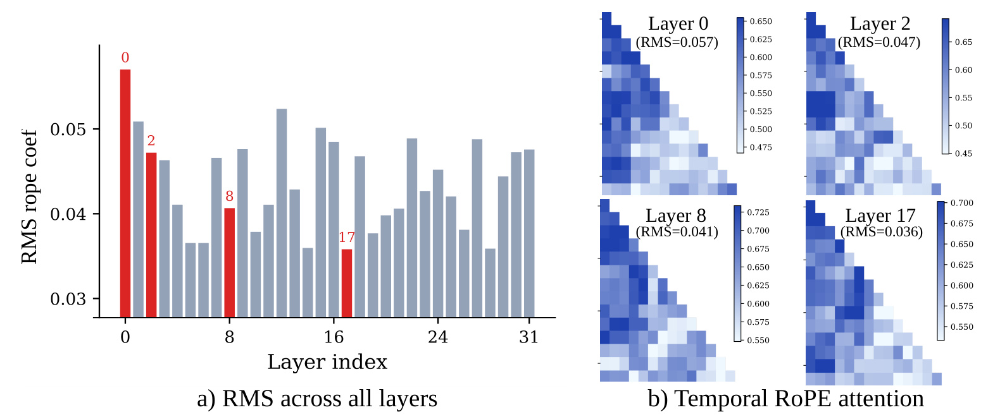
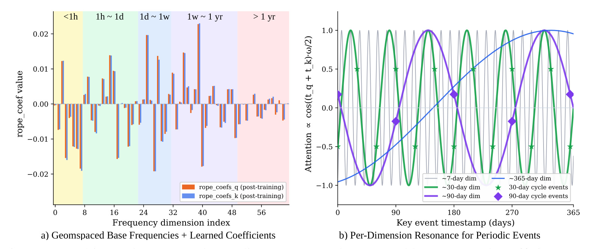
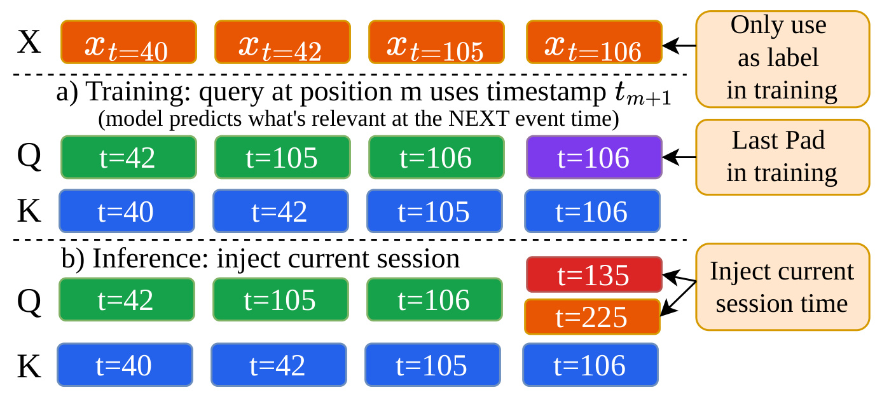
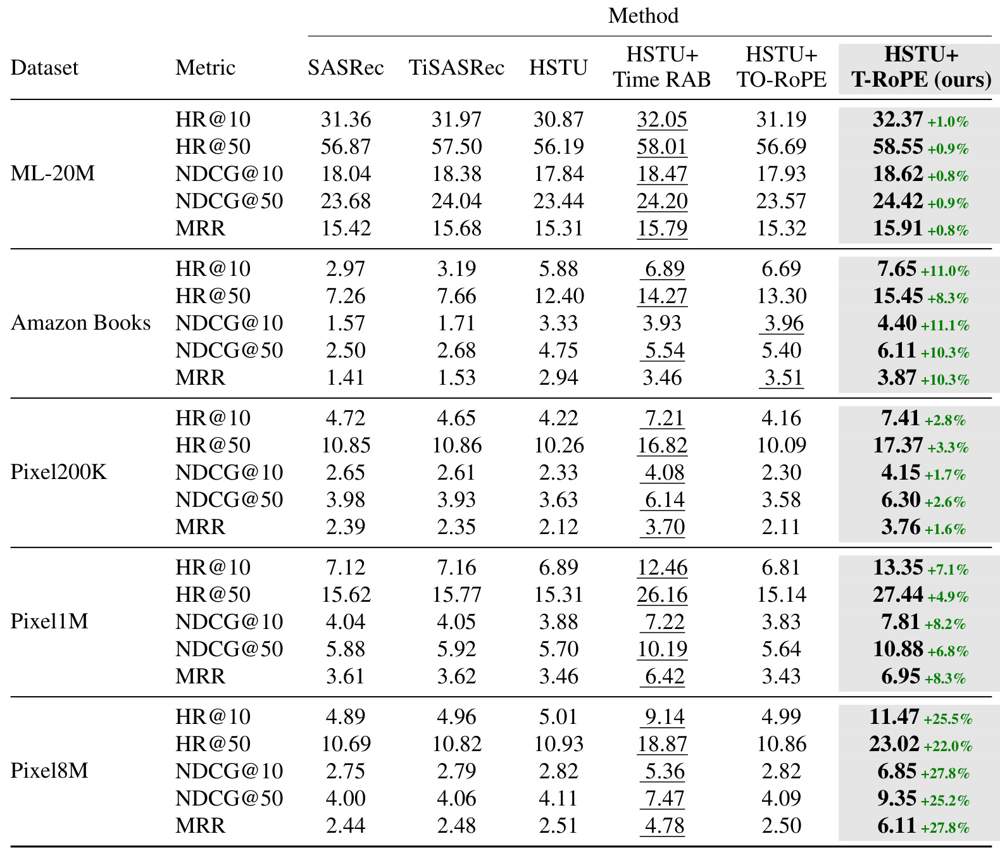
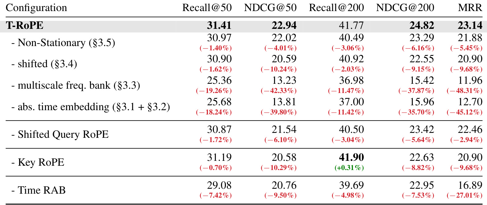
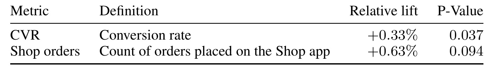
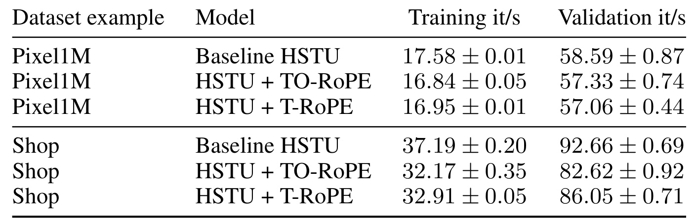

T-RoPE：让序列推荐的旋转位置编码看见真实时间
T-RoPE 研究生成式序列推荐中的时间编码：把文本模型常用的序号旋转换成真实时间、多尺度频率和预测时刻对齐，并通过键向量反向旋转表达日历相位。第一作者 Yang Liu 来自 Shopify，合作者包括 MIT 与 Liquid AI。论文于 2026 年 9 月 24 日首次公开，本文依据完整 17 页版本阅读。论文入口。未核验到本文官方代码或项目页，因此下文的复现讨论以论文算法、附录和实验设置为依据。
交互索引只告诉模型事件的先后顺序，却不告诉它间隔了几秒、几周还是几个季节。推荐中的真实时间间隔、多尺度行为周期和日历相位，因此无法被只依赖索引的旋转编码充分表达；即使换成时间戳，共享查询与键系数的标准旋转仍会抹去共同的日历位置。
1. 背景和问题
生成式推荐借用了语言模型的一整套建模方式：把历史行为视作序列，在每个位置预测下一件商品或下一次动作，再用高效注意力和可扩展训练处理大量用户。这里容易被忽略的区别是，文本 token 的位置差本来就有语法和局部上下文含义，而用户事件的序号差只是观察到的行为数量。一次密集浏览可以在几十秒里产生十几个位置，低频购买也可以跨越半年才产生下一个位置。相同的序号距离不能代表相同的兴趣衰减，更不能直接代表相同的补货周期。模型可以通过商品共现学到一部分规律，但这与编码本身显式保留时间信息是两个问题。
论文把缺口分为三个层面。首先是真实间隔：相邻两条历史究竟隔了多久。其次是多尺度周期：零食、家庭日用品、服饰和季节性商品可能分别对应天、周、月和年的重复节律。最后是绝对日历相位：相同的相对行为片段，在节庆前与普通工作周是否应产生不同的推荐。前两个层面容易被统称为时间特征，第三个却需要单独定义，因为知道“距离上次购买七天”并不等于知道“现在处于哪个季节”。这也是作者没有停留在把整数位置换成时间戳，而继续修改查询与键相位关系的原因。
这里的“绝对”并不是给每一个日期学习一个不可泛化的查表向量。作者使用 Unix 秒级时间戳，经连续旋转映射成多个周期分量。对于某个固定周期，同一日历相位可以在后续年份重复出现，因此这种表示仍能表达重复规律。但周期性也带来混叠：单个旋转平面绕一圈后无法区分相差整周期的时刻；频率库需要多个尺度共同工作，内容向量还要提供商品与用户相关性。理解这个限制后，才不会把绝对时间敏感误读成模型已经知道节日名称、营销活动或因果性的季节需求。

Table 1 对比的不是模型参数总量或最终推荐准确率，而是位置编码机制是否显式提供五种能力。标准 RoPE 对时间戳、可学习时间系数、多尺度实际周期、查询时刻移动和非平稳编码均未提供专门机制。TiSASRec 的时间戳能力被标为部分覆盖，因为它主要注入离散时间间隔；这能帮助模型识别新近行为，但不能等同于连续频率空间。TO-RoPE 已经加入时间戳和多尺度结构，可学习项属于有限版本，而查询向下一事件时刻移动、反向键旋转是本文进一步强调的结构变化。表格中的勾和叉应按作者在表注里给出的定义阅读，不能理解为所有基线模型都完全无法从其他输入推断任何时间信息。
“可学习”这一列尤其容易误解。所有神经网络基线当然都有可训练参数，表格讨论的却是旋转角度内部的时间系数是否可学习；“多尺度”也限定为显式连续频率库，不是只要网络有多层就算拥有多尺度时间建模。这样的定义使表格适合解释方法差异，却不能替代同训练预算的消融。若输入已经加入月份、小时或节庆 embedding，端到端系统可能通过其他路径获得日历敏感性，这不会推翻作者针对共享几何旋转编码的定理，但会改变新模块的实际增量价值。论文后面的公开对照和工业消融，因此比这张能力清单更能决定是否值得迁移。
从结构上看，时间 RAB 与 T-RoPE 处理的是两个不同位置：前者把分桶时间差变成注意力打分上的标量偏置，后者改变查询与键向量的相位几何。标量偏置可以直接表达近期偏好，而旋转可以把时间条件与内容方向交织。两者并不天然互斥，本文最强模型恰好保留了 Time RAB。这个事实对工程阅读很重要：如果现有系统已经有相对时间偏置，论文并没有要求先删除它，也没有证明连续旋转一定能独立替代所有近期信号。把 T-RoPE 理解成“时间特征终于第一次进入推荐”会夸大贡献，把它理解成“在成熟的时间偏置之外重新设计 RoPE 的时间坐标”更符合原文。
论文的任务仍是下一物品预测。历史由物品及时间戳组成，经过 Transformer 或 HSTU 获得查询、键和值；方法直接作用于查询、键的二维通道对，不负责生成候选物品的语义编码，也没有引入额外的大模型推理链。公开实验采用物品 ID 输入，工业实验在 Shop 用户行为上测试。它与生成式推荐的关系是序列骨干与自回归训练接口兼容，而不是已经在所有离散语义 ID 解码器、复杂工具调用代理或广告拍卖系统上验证过普适收益。
阅读证据时还要区分三种“时间变化”。只让当前请求时刻前移而历史保持固定，哪怕标准时间差编码也会产生变化，因为请求到历史的间隔变长了；把请求和整段历史一起平移，才是理论部分定义的不变性检验；跨年分布漂移则涉及商品供给、用户偏好和营销环境，远比编码的数学平移复杂。本文证明了第二种表达能力，并用实际推荐实验支持其价值，但没有仅凭一个旋转定理就解决第三种长期分布稳定问题。将这些问题分开，既能看清贡献，也能避免把后面的季节性解释写成过强保证。
在研究问题的优先级上，时间戳编码还关系到样本选择方式。固定保留最近若干个事件，会让高活跃与低活跃用户的历史覆盖时长差异很大；索引编码把这种差异隐藏起来，时间编码则让它进入模型。但作者没有把用户活跃度、物品生命周期和真实周期性分别做完全隔离的实验，所以后文的跨数据集增益只能作为相关证据。一个实际可检验的问题是，把时间戳随机置乱后收益是否消失，或仅保留相对间隔时哪些品类损失最大。这些对照有助于识别真正被模型利用的信息，却属于本文未给出的进一步验证方向。
2. 方法
2.1 时间坐标与旋转几何
符号解释：$R$ 是二维旋转矩阵，$\phi$ 是弧度角，正弦和余弦决定通道混合。旋转不改变每个向量的欧氏范数，因此改的是匹配方向而不是直接放大向量长度。标准 RoPE 把一个注意力头的偶数维向量分成二维平面，每个平面使用一个角度做保范数旋转。真实时间替代位置序号后，时间进入向量之间的匹配，而不是只作为独立标量输入。其群结构给出下一个点积关系：
符号解释：$q_m$、$k_n$ 是第 $m$、$n$ 个事件在某个二维平面的内容向量，$\top$ 为转置。整数位置把角度差变成序号差，时间戳则把它变成真实时间差。余弦具有周期性，不是单调时间衰减函数；原文式三的余弦直觉只能说明相位随间隔变化，不能推出时间越远注意力必然越小，完整双线性点积还含内容决定的正弦项。

Figure 1 左侧让所有事件按索引均匀分布在圆周，视觉上抹平了事件发生速度的差异；中间换成真实时间后，密集发生的事件聚成簇，跨度大的行为段出现在不同相位；右侧再将三角形查询移向下一事件时刻，而圆点键仍保留历史位置。蓝色和橙色区分两组历史范围，它们的空间变化表达的是编码所看见的时间坐标，不是商品 embedding 经训练后必定形成的聚类。图中没有真实用户的命中率或注意力准确性测量，因而不能拿几何示意的“簇更清晰”当作预测收益已经被证明。它最适合帮助读者分清三种改动发生在何处：序号被替换、频率把时间投影到相位、查询和键开始使用不同的时间位置。
连续时间有一个直接好处：历史被截断以后，保留下来的相邻事件之间仍然保有真实间隔，删掉中间事件不会自动把几个月的距离压成一个索引单位。但这种好处依赖时间戳质量，重复记录、时区混用和行为到达延迟都可能让输入的物理时间不同于实际发生时间。论文使用 Unix 秒且不做中心化，意味着模型保留共同的时间原点；若复现时习惯性减去每个用户的首条事件时间，就会同时改变后续绝对相位的含义。对于标准共享系数的差分旋转，全局减常数不影响点积；对于后文相位和的编码，全局减常数可能改变模型行为，这个预处理选择已经成为方法的一部分。图中圆周还提醒我们，相位只是投影，不是保序的线性时间轴；多次绕圈以后图上邻近的事件可能相距很远，因此不能从圆上的距离直接恢复唯一的时间间隔。
2.2 多尺度频率与可学习系数
符号解释：$d$ 是旋转平面编号，$t_m,t_n$ 为秒级时间戳，$\alpha^q_d,\alpha^k_d$ 为查询、键的独立可学习系数，$\beta_d$ 是基底时间尺度。系数乘在角度中，数学上改变的是有效角频率，不能严格当作注意力幅度的独立门控；这里的“加强某种时间尺度”是训练后几何作用的解释。时间戳进入旋转后，作者给查询和键分别设置每层、每个二维平面的可学习系数，并让基底尺度在对数空间中等距覆盖。
符号解释：$D$ 为每头参与旋转的维度，$d$ 遍历 $1$ 至 $D/2$，默认 $\beta_{\min}=10^2$ 秒、$\beta_{\max}=10^8$ 秒。真正周期还取决于 $2\pi$ 和系数绝对值，不能把基底尺度直接念成最终周期。宽频库提供候选时间尺度，学习过程再决定各层如何使用这些尺度。

Figure 2 的左图是各层查询系数的均方根大小，右图在同一条人工构造的事件序列上展示若干层的时间注意力分量。被挑出的第零、二、八、十七层分别标出约零点零五七、零点零四七、零点零四一和零点零三六的均方根，但这些数不是推荐指标，也不是四个独立模型的得分。右侧三角热图保留因果可见范围，颜色反映该层的时间调制；不同层的图案不一样，支持“时间敏感度可以分层学习”的解释。注意各热图色条范围不同，不能简单以哪块图看起来更深来定量比较整体强弱，更不能据此推断某层必然更重要或应被保留。
从这幅可视化能可靠读出的结论，是同一套固定频率范围并没有强制所有层学习相同的时间行为。浅层和深层可以在同一输入上形成不同周期组合，配合不同语义表示完成后续匹配。然而，作者选取的是合成事件序列上的可视化，未展示逐层删除后的业务损失，因而图案变化与业务贡献之间仍有证据距离。若要解释真实服务中的季节偏好，应结合真实用户群、品类及请求日期分层，而不是仅看系数绝对值。另一个值得保留的细节是该图展示的层数多于公开基准的两层骨干，它说明可视化来自更大模型语境，不能拿来替代公开超参数记录或混入小模型参数量估算。均方根还会丢失系数正负号，所以即便两个层的柱高接近，其有效频率与相位组合也可能不同；解释时间作用时需要同时读取完整系数向量及其对应频率，而不是仅以单个汇总统计排序层的重要性。

Figure 3 左侧把频率维度按小时以内、小时到天、天到周、周到年以及更长范围涂色，橙色查询系数与蓝色键系数在不少维度上接近。独立训练并不意味着它们一定走向相反功能：原文观察到多数维度的符号和大小趋于一致，这恰好让后面的反向键旋转在相位和里产生明显的共同时间响应。正负系数都合法，因为它们控制旋转方向；接近零的维度时间变化较弱，也不是对应内容维度完全失效。两种系数的对齐是所展示模型的经验现象，不能升级成所有数据集训练必然收敛到同一结构的结论。
右侧用约七天、三十天、九十天和三百六十五天的曲线展示不同尺度如何与周期事件对齐。星形和菱形标出的重复事件落在不同频率曲线的特定相位附近，可以帮助理解为什么单个固定时间尺度不足以同时表达短周期补货和长周期季节偏好。曲线持续振荡，远处也能回到高响应，因此它同时提供了反例，说明“时间距离大必然权重小”不是这个机制的数学性质。多频率叠加与内容匹配才可能在实践中形成有用的近期或周期模式。图中按周期解释频率维度是便于理解的分组，训练后的有效频率由系数重新缩放，边界不是固定日历特征桶；模型也没有显式接收“圣诞节”或“发薪日”这些名称，所以对复杂节庆迁移的表达仍需数据学习而非规则保证。对于日期不固定的节庆或者临时促销，单一年度正弦只能提供粗粒度背景，无法自动提供活动日历；这说明周期表达和事件语义仍需要各自合适的数据来源。
2.3 查询时刻对齐与非平稳键
符号解释：$t_{m+1}$ 是训练中的下一事件时刻，$t_n$ 是第 $n$ 个历史键的时刻，其余符号同前。最后训练槽仅作标签或填充边界，保留自身时间；在线最后查询则注入已知请求时间 $t_{\mathrm{now}}$。不应把训练中的未来标签时间和部署时不可知的未来购买时间混用。作者把下一事件监督与旋转坐标对齐：训练时位置 $m$ 的查询使用下一条事件时间，键保留历史事件时间；推理时最后一个查询改为当前会话时间。这里是预测目标时间条件化，不是让模型额外预测下一次行为何时发生。

Figure 4 用四个事件时刻演示完整数据流。输入事件发生在四十、四十二、一百零五和一百零六，历史键始终保存这些时刻；训练查询依次对齐四十二、一百零五、一百零六，最后槽位保留一百零六作为边界。在线历史不变，最后查询可以分别注入一百三十五或二百二十五，从而评价当前时刻最相关的下一项。右侧注释明确区分训练标签、训练填充和推理注入，避免循环左移实现不慎把首条时间卷回最后一个位置。图中两种在线请求时间是两个情境，不是同时把两个查询时间拼成新用户事件，更不是把不存在的购买记录写入历史。
训练时能够使用目标事件的时间，是因为监督任务已经知道下一条记录；部署时则依赖当前请求时间已知。这种条件化适合“用户现在打开应用，给出接下来相关物品”的服务接口，但若任务要求从离线历史同时预测未来商品和未来发生时间，就不能直接把本文结果套上去。请求时刻与真正的下一次成交时刻仍可能有偏差，论文未给出这种误差的专项鲁棒性曲线，复现应把它作为待测边界。另一个易混点是，只改最后请求时刻而历史固定，本来就会改变标准相对时间差；这幅图展示的是训练推理对齐路径，不能单独证明非平稳键已经打破全局时间平移不变性。后一个命题需要把历史和查询一起移动，再观察相位是否抵消。
最终键用反方向旋转，相同的二维算子接口产生不同的合成相位。下式汇总原文式七和式九：
符号解释：$\bigoplus$ 表示各二维平面拼接，$q'_m,k'_n$ 是旋转后的完整向量，$a_{mn}$ 为注意力原始点积分量。与同向旋转的相位差相比，反向键形成加权相位和。所有时刻同时加常数 $c$ 时，角度额外变化 $-(\alpha^q_d+\alpha^k_d)c/\beta_d$；若某个活跃平面系数和非零，存在非退化内容向量及非整周期平移使点积改变。这是表达能力的充分条件，绝不是每个输入、每个平移都必然改变输出。系数和为零可以退化回相对时间编码；同向旋转若查询键系数不同，也能通过系数差打破对称性。因此本文给出的是一种兼容 RoPE 的直接实现，并非唯一可能路径。固定键时间后，查询有效角频率等于某目标周期的非零整数谐波时，可以表达该周期的正弦变化；“能够表示”仍不等于优化器必然学到真实季节规律。
2.4 反向传播与实现边界
附录保留标准旋转的向量梯度之外，还必须计算角度梯度，因为角度不再是固定缓存。每层仅引入两组平面系数，总参数增量为每层 $D$、全模型 $MD$，其中 $M$ 是使用该模块的层数。角度在头之间共享，反向时先聚合不同头对角度的贡献，然后继续链式传播到系数：
符号解释：$\mathcal L$ 是训练损失，$b,l$ 为批次及序列位置，$\Phi$ 是角度张量，$t^q$ 是按前述规则移动后的查询时间。时间戳约为十亿秒，梯度中的时间除以尺度可能很大，作者要求裁剪或重缩放以稳定训练；角度使用 FP32，即使骨干为 BF16，也先完成三角运算再转回模型精度。这里没有声称 FP32 能完全消除大角度数值误差，严格复现仍应核验不同设备上的相位精度。时间角度构造及额外反向开销随序列长度和头维度线性增长，而完整注意力仍有自身二次项。线性复杂度是增长阶数，不等于无成本；运行期正弦余弦、梯度归约以及算子融合情况最终都应由真实吞吐测量约束。
3. 实验结果
公开实验覆盖 ML-20M、Amazon Books 与 PixelRec 的三个规模版本。附录 Table 6 给出 ML-20M 约十三点八万用户、两千万交互，Amazon Books 约七十七点六万用户、九百四十九万交互；Pixel200K、Pixel1M、Pixel8M 分别约二十万、一百万、八百八十九万用户，以及三百九十七万、一千九百八十九万、一亿五千八百四十九万交互。不同稀疏度和领域帮助检验时间建模是否只在一种消费模式下有效，不过这些名称不能直接代表严格可控的单变量规模实验，因为用户、物品和交互组成一起改变。
所有公开方法在同一 PyTorch 框架里使用物品 ID、统一预处理、截断长度、留一验证方式和候选评估流程。骨干为两层、嵌入维度五百一十二、四头；HSTU 相关方法注意力维度一百二十八。ML-20M 最大历史为二百，其余为五十。AdamW 学习率千分之一、批大小一百二十八、随机种子四十二，负例数量一百二十八，采样 softmax 温度零点零五，在单张 H100 上训练至少十轮、最多一百轮，并按验证命中率调学习率。论文没有给公开表的多随机种子置信区间，故微小领先应按当前实验配置的观测结果理解。

Table 2 的所有指标都以百分数展示，因此从七点二一到七点四一，是零点二个百分点的绝对差，而不是二十个百分点。T-RoPE 在五个数据集、五个指标上均为表内最优，但收益规模差异很大。ML-20M 的 HR@10 从最强对照三十二点零五提高到三十二点三七，约一个百分点以内的相对增益；Amazon Books 的 HR@10 从六点八九到七点六五，相对提高约百分之十一，其余指标相对行内次优大致提高百分之八至十一。这个分布支持时间异质性强的领域可能更受益，但论文未通过专门操纵时间结构来证明数据集差异的唯一原因就是季节性。
PixelRec 的口径需要格外认真。Pixel200K、Pixel1M 和 Pixel8M 的 HR@10 相对最强基线分别是七点二一到七点四一、十二点四六到十三点三五、九点一四到十一点四七，相对增益为百分之二点八、七点一、二十五点五。摘要写出的百分之七十八至一百三十的大幅增长，实际对应较弱的 TO-RoPE 对照，其 HR@10 为四点一六、六点八一和四点九九；不能沿用摘要措辞把它报告成对最强基线的增益。表格绿色数字明确是对行内次优的相对变化，做技术选型应该优先看这个口径。Pixel8M 的 NDCG@10 从五点三六到六点八五，相对提高百分之二十七点八，说明收益不只体现在更宽召回列表中，也出现在靠前排序。
这张表还能提醒读者不要把“新位置编码”与“所有已有时间方案”合并成一组。HSTU 加 Time RAB 在多个 PixelRec 设置下明显强于 TO-RoPE，因此时间差标量偏置已经是很强的对照。T-RoPE 的可信价值是在保留该偏置后继续获得增量，而不是凭借一个弱基线制造翻倍故事。另一方面，统一框架和超参数有利于控制变量，但也可能并不等于每种基线都获得各自最优的调参预算；公开实现未核验、随机种子单一及训练负采样方式，均限制了外部复现的直接性。结论应限定为作者报告的实验协议下优于所列对照。
工业数据来自 Shop，约一点五亿用户、四百八十万物品、超过六十亿交互，跨度为多年。模型为十二个 HSTU block、嵌入一百二十八维、八个头、每头三十二注意力维度、最大历史五百一十二。评估使用一天时间留出，之前事件训练，留出日的每个有意义交互都可成为正例；因此采用 Recall 而不是只有一个正例的命中率。这个设置与公开留一协议不同，不能把两张表的绝对数字拿来比较领域难度。

Table 3 上半部分先列完整模型，再逐步累积去除组件。NDCG@50 完整值为二十二点九四，去掉非平稳键后为二十二点零二，再去掉查询移动为二十点五九，再去掉多尺度频率库为十三点二三，最后回到不含绝对时间旋转的 HSTU 加 Time RAB 为十三点八一。因此，比较二十点五九与十三点二三得出的多尺度收益，是在特定简化模型基础上的边际变化，不是“在完整模型里单独删多尺度”的结果。由十三点二三恢复到二十点五九约增加百分之五十五点六；反方向删除则约下降百分之三十五点七，两者分母不同，不能把摘要的增加百分之五十六与表中相对完整模型的负百分之四十二点三三混为同一比例。
非平稳键恢复时，NDCG@50 从二十二点零二到二十二点九四，相对增加约百分之四点二；表里负百分之四点零一则是删除后相对完整模型的降幅。移位查询在累计链上的增益约百分之六点九，单独删除查询旋转的下半行却是二十一点五四，对完整模型下降百分之六点一，这两项也不是同一个实验。表下半部是独立从完整模型移除查询旋转、键旋转或 Time RAB。去掉键旋转让 NDCG@50 降至二十点五八，但 Recall@200 反而从四十一点七七略升到四十一点九零。这表明组件贡献依赖指标，不能把“所有组件对每个指标都严格有益”写成结论。
去掉 Time RAB 后，MRR 从二十三点一四降到十六点八九，相对下降百分之二十七点零一，NDCG@50 也降到二十点七六，显示 RAB 保留了连续旋转尚未完全替代的近期匹配信息。与此同时，二十点七六仍比十三点八一的骨干约高百分之五十点三，说明两条时间路径各自有价值。完整模型相对骨干在 Recall@200 上约提高百分之十二点九，在 MRR 上约提高百分之八十二点二，这才是摘要工业增益百分之十三至八十二的来源。累计消融支持多尺度是主要增量来源，但没有析因设计就不能把各项比例相加成可独立叠加的贡献，也不能说反向键是全部收益的唯一解释。

Table 4 报告的是对生产对照组的相对提升。实验组沿用 T-RoPE 设计并扩大离线模型架构，对照为不含 T-RoPE 的同构模型。转化率相对提升百分之零点三三，检验的概率值为零点零三七；订单数量相对提升百分之零点六三，概率值为零点零九四。以常用百分之五显著性阈值看，前者达到这一阈值，后者没有达到，订单只能作为方向性正向信号。不能把二者一起写成“线上转化和订单均显著增长”，也不能把相对提升写成绝对增加零点三三或零点六三个百分点，因为论文没有提供基线水平供这种换算。
线上结果与离线结果之间的差距很合理：离线的 NDCG、召回率或倒数排名衡量候选排序，线上订单还受展示策略、库存、价格、用户决策和后续链路影响。编码改善只占整条系统的一部分，因此无需期待订单跟离线 MRR 一样增长几十个百分点。论文未在该表附近披露试验持续时间、分流规模、独立用户数、置信区间和多重检验校正细节，外部读者无法独立重建统计功效或长期稳定性。已有概率值仍然应保留，但它不能代替完整实验设计，尤其不能因为订单方向为正就推断扩大流量后必然保持正收益。
对落地价值更克制的说法是：作者在真实 Shop 服务中观察到一个达到常用阈值的转化率正信号，并观察到尚不足以在同阈值下确认的订单正方向。它补足了纯公开基准不能提供的生产证据，却不证明其他行业或其他请求时间分布下也有同等增长。对于关注广告转化的读者，转化定义与订单计数的归因窗口尤其需要重新对齐；本文未公开的字段不宜自行填充成点击转化率、支付转化率或某个固定归因天数。保留这一边界，比把小数点后的提升包装成普适收益承诺更有研究价值。

Table 5 来自第二轮训练中采样的训练与验证迭代器吞吐快照，单位是每秒迭代次数，数值后的波动量为样本标准差。Pixel1M 训练从基础 HSTU 的十七点五八降到 T-RoPE 的十六点九五，吞吐约减少百分之三点六；验证从五十八点五九降到五十七点零六，减少约百分之二点六。Shop 训练从三十七点一九降到三十二点九一，减少约百分之十一点五；验证从九十二点六六降到八十六点零五，减少约百分之七点一。这里的“开销温和”需要连同具体数据规模和实现理解，不能把线性额外复杂度解释为服务免费获得时间能力。
与 TO-RoPE 比较，T-RoPE 的训练吞吐在两例中略高，Shop 验证也更高，Pixel1M 验证略低，整体说明这一更丰富的时间机制没有必然造成比已有时间旋转更昂贵的吞吐损失。它没有报告端到端线上延迟分位数，没有把预处理、网络、候选检索、缓存命中和批处理等待全部纳入同一服务测量，所以不应声称上线延迟只增加某个固定百分比。每秒迭代次数变成单步耗时还需要取倒数，吞吐下降百分之十一点五对应单步时间增加约百分之十三，而不是同一个百分数，这种口径在做预算时很容易被忽略。
附录给出的参数增量和算术计数与吞吐表相互补充：少量系数本身几乎不增加模型存储，但在线计算角度、求正弦余弦和训练角度梯度仍要消耗算力。频率库和时间张量可以在头间广播，不意味着跨请求所有相位都能使用固定位置缓存，因为当前请求时间不断改变。生产迁移还应观察长历史长度下的带宽压力、融合内核路径及大时间戳数值稳定性。论文提供了明确的前后向算法，足以指导实现；未核验到公开代码则意味着这些工程细节仍需复现方承担，不能把伪代码完整当作已经获得即插即用的软件包。
附录 Figure 5 继续展示人工多尺度序列的注意力块结构，依次增加时间戳、查询移动和完整方法后，日、周、月、年分块更可辨认。这与方法直觉相符，但和真实用户上的因果归因仍不是同一种证据。本文将其作为补充理解而不重复放图，保留主文的几何示意、层系数可视化、频率共振图及所有主结果、消融、线上和效率表，更有利于把有限阅读注意力集中在真正决定结论强度的观测上。
4. 总结
T-RoPE 最值得保留的贡献，是把“用户行为有时间戳”继续推进为“注意力几何是否保留需要的时间对称性”。直接替换位置索引解决真实间隔，多尺度频率解决单一时间尺度的覆盖不足，查询移位把训练目标时间与在线请求时间接起来，独立系数和反向键则提供共同日历平移下的敏感性。它没有抛弃 RoPE 的二维旋转接口，因此可以沿用骨干的查询键管线；代价主要来自运行期相位与可学习角度的反向，而不是大规模新增参数。这种围绕输入领域重新审视语言模型默认组件的方式，比“模型更大就能自动学会一切时间规律”更具体。
理论结论必须带着条件记忆。共享系数、同向旋转时，全局时间平移会抵消；独立系数的同向旋转本来就可能破坏该不变性。反向键给出的是直接、兼容且可训练的充分机制，系数和非零时存在改变注意力的平移和内容向量，系数相消或整周期平移则可能保持不变。正弦余弦表达的是周期，而非单调遗忘。日历周期的可表示性只说明函数族能容纳相关模式，并不保证有限数据、优化过程和跨年部署一定获得稳定的季节偏好。把这些限定保留在笔记里，后续写代码或引用论文时才不容易把数学结论越讲越强。
实验支持力度也有层次。公开五组数据在所列指标上全面领先，Amazon Books 和最大 PixelRec 的相对收益较明显，ML-20M 则较小。工业消融最突出的是多尺度库，非平稳键带来进一步增量，Time RAB 继续发挥互补作用。线上转化率为正且达到常用显著性阈值，订单只是方向性。最需要纠正的传播风险，是将相对 TO-RoPE 的大幅增长当作相对最强基线的收益，以及把累计删除的消融读成完整模型的单项删除。这两个口径一旦混淆，就会把本来有价值的工作包装成远超数据支持的突破。
对于已有 HSTU 或其他序列推荐模型，合理的复现起点是保留既有时间偏置，按原文实现时间频率与查询时间对齐，并明确记录事件时间、请求时间和标签时间的来源。随后可分别检验固定频率与学习系数、同向独立系数与反向键、含或不含查询移位，以及跨月、跨季和跨年切分的表现。这里提出的是基于论文局限的后续实验设计，并非作者已经完成的结果。若历史时间经过匿名平移或相对化，或者服务拿不到与训练目标对应的请求时刻，必须先确认数据定义是否仍满足方法假设；否则“同样的公式”也可能已经变成另一种任务。
工程上还应把大 Unix 时间戳、混合精度角度计算、梯度裁剪和动态请求的缓存策略作为实现的组成部分。参数增量很小并不消除数值和吞吐成本；单个 epoch 的迭代快照也不能替代服务压测。数据层面，专有工业样本和完整线上试验设计无法公开复核，公开基准又只有所报告种子，因此目前更合适的结论是：T-RoPE 提供了一条有理论动机、公开与工业证据相互支持的时间编码路线，值得在时间异质性较强的推荐场景复现验证，而不是已经证明每个推荐服务都能获得同样幅度的收益。